Префектура Нагасаки · Одзика и остров Нодзаки · острова
Одзика и Нодзаки: остров старых домов и остров тайных христиан
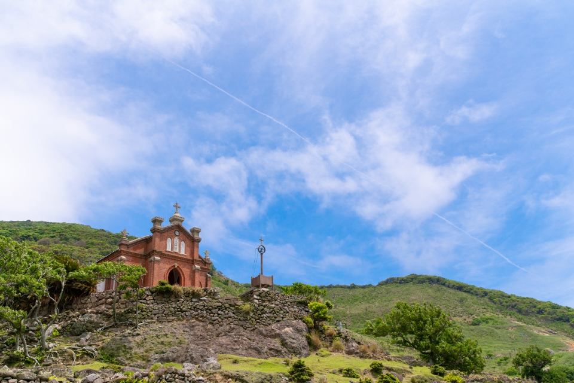
Летом хочется уехать туда, где можно никуда не спешить. Из порта Сасэбо на западе Кюсю ходят суда к маленьким островам, и на двух из них, Одзике и Нодзаки, время течёт особенно медленно.
Дорога
Всё начинается в Сасэбо
Острова Одзика, Нодзаки и Уку лежат в море к западу от Кюсю. Удобнее всего добираться до них из Сасэбо, второго по величине города префектуры Нагасаки: отсюда до островов ближе всего, и суда ходят чаще, чем из других портов. Сасэбо и Одзика даже объединены в общий туристический район «Страна морского ветра».
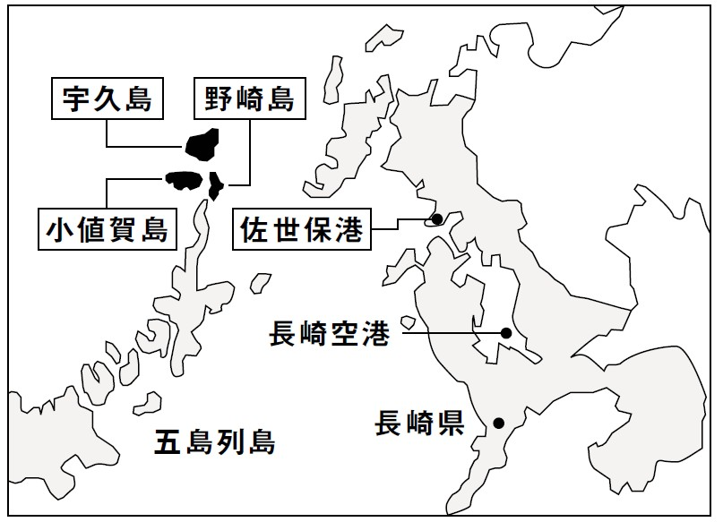
От аэропорта Нагасаки до станции Сасэбо около 90 минут на автобусе или около 55 минут на маршрутном такси. От станции до порта пять минут пешком. Скоростное судно идёт до Одзики полтора часа, паром от двух с половиной до трёх часов. На остров Нодзаки попадают уже с Одзики.
Одзика
Остров, где живут как местные
Городок Одзика состоит из 17 островов, и главный из них сам остров Одзика. Весь он входит в национальный парк Сайкай. Здесь шумный рыбацкий порт, тихие рисовые поля, очень прозрачное море и узкие улочки, от которых веет чем-то давно знакомым. Рыба и овощи местные, люди приветливые, и спешить здесь некуда.
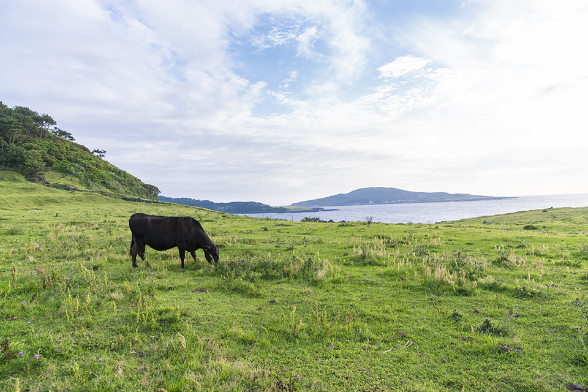
Одним из тех, кто полюбил Одзику, стал исследователь восточной культуры Алекс Керр. В 2007 году он взялся за возрождение старых домов острова. Сначала дом семьи Фудзимацу превратили в ресторан, затем дома старше ста лет стали гостевыми: каждый сдаётся целиком. Стены и балки сохранили, внутри поставили мебель мастерской Kashiwa из города Такаяма, и старые постройки стали удобными и современными. Таких домов шесть, все разные, и разбросаны они по нескольким деревням острова.
Гулять, купаться, рыбачить: чем заняться, каждый решает сам. Можно даже договориться об ужине в доме у островитян и попробовать домашнюю еду. Лучший способ узнать Одзику это пожить на ней так, будто ты здесь свой.
Ресторан «Фудзимацу»
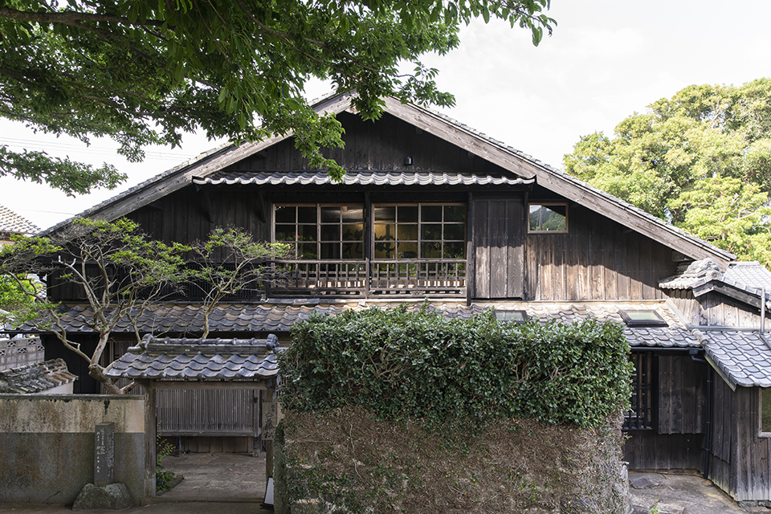
Здесь готовят японскую кухню из того, что дал остров. Рыбу берут утром в рыболовецком кооперативе, овощи выращивают на Одзике. Летом в меню исаки, местная рыба, которой остров дал собственное имя.
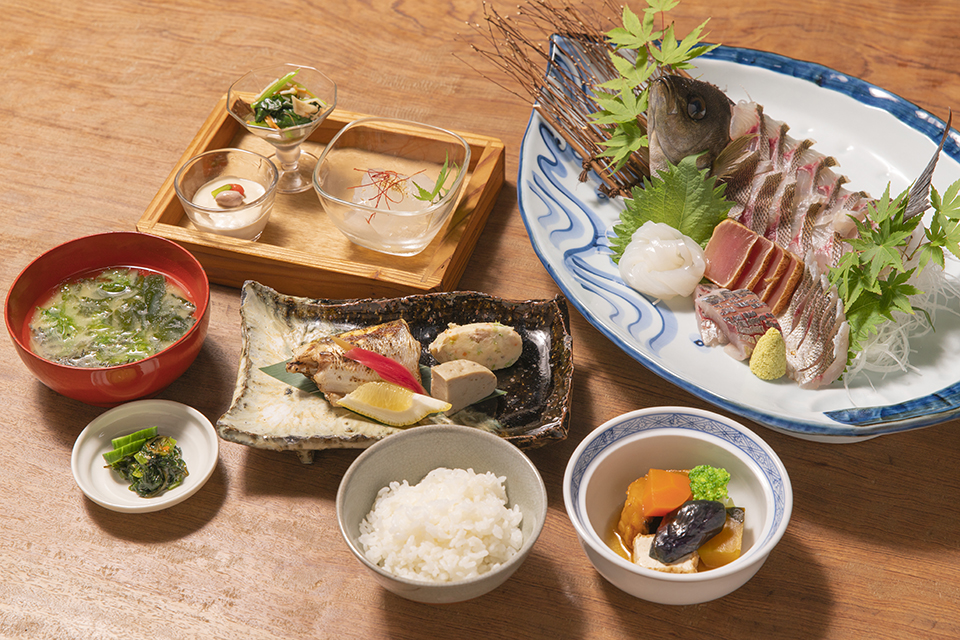
Ресторан «Фудзимацу»
- Адрес
- префектура Нагасаки, уезд Китамацура, Одзика, Маэката-го, 3694
- Телефон
- +81 959-56-2646
- Часы работы
- 11:00–15:00 (последний заказ), 18:00–22:00 (последний заказ 21:30)
- Выходные
- вторник
Гостевой дом Ichigoan
Ichigoan стоит в деревне Янаги среди рисовых полей. Двухэтажный дом просторный: в центре земляной пол, вокруг него мастерская, столовая и комната с татами. Ванная и кухня новые, есть кондиционеры, посуда и бытовая техника, так что готовить можно как дома.
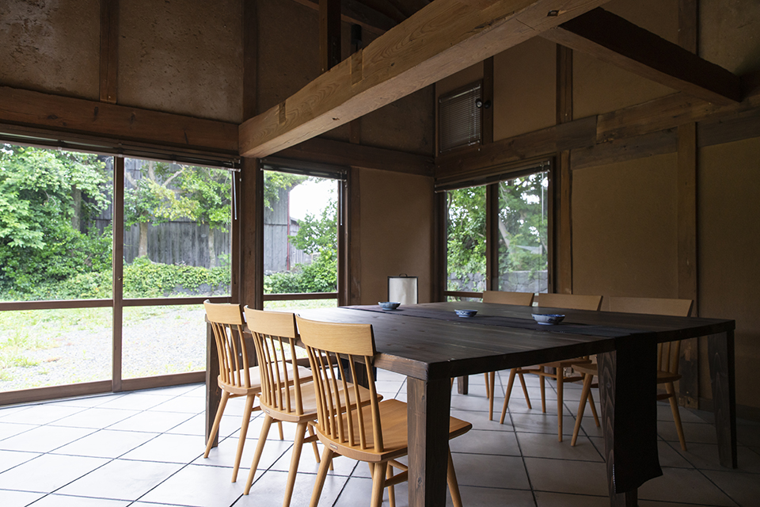
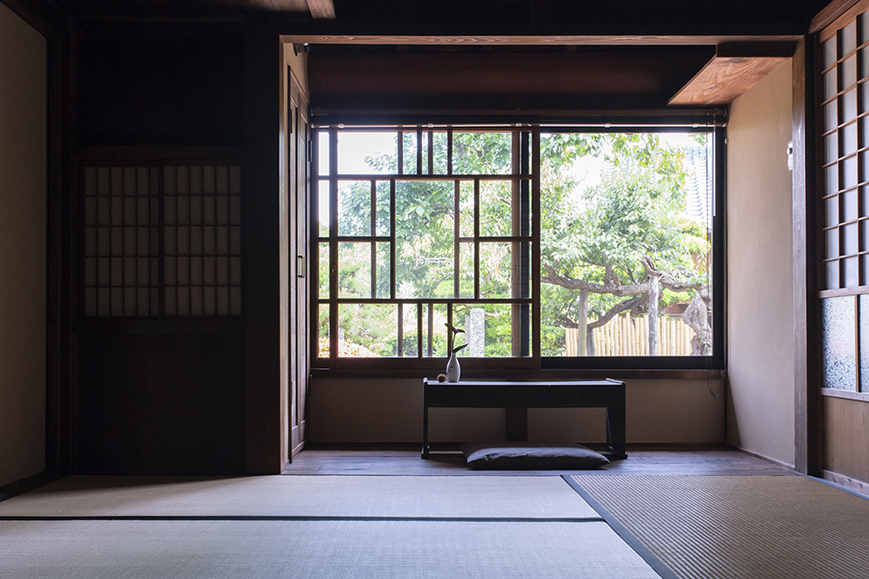
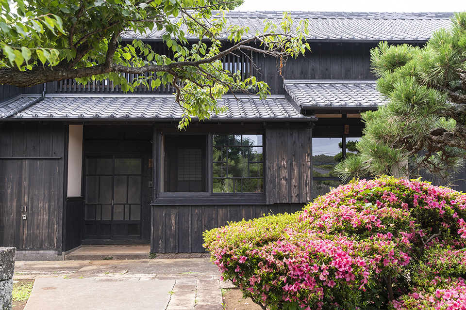
Гостевой дом Ichigoan
- Адрес
- префектура Нагасаки, уезд Китамацура, Одзика, Янаги-го
- Телефон
- +81 959-56-2646 (Ассоциация островного туризма Одзики)
- Цены / Вход
- от 13 000 иен с человека без питания при двух гостях в доме, без налога и сервисного сбора
- Заезд / выезд
- 14:00 / 11:00
Типография Синкося
Синкося это единственная типография на острове, и работает она около ста лет. Хозяйка в четвёртом поколении ведёт OJIKAPPAN: занимается дизайном и печатает на старых станках. Гостям предлагают мастер-классы, где можно напечатать открытку или сделать коробочку. Записываться нужно через Ассоциацию островного туризма Одзики.
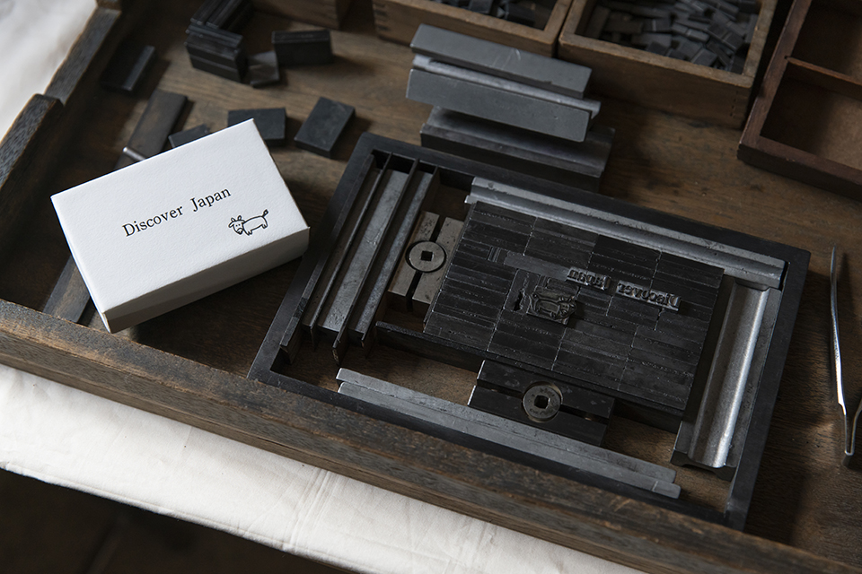
OJIKAPPAN
- Адрес
- префектура Нагасаки, уезд Китамацура, Одзика, Фуэбуки-го, 1738
- Телефон
- +81 959-56-2646
- Цены / Вход
- 2500 иен с человека за одну форму
Нодзаки
Остров, где молились тайно
Стоит сойти на берег Нодзаки, как замечаешь оленей: дикие олени внимательно следят за гостями. Вокруг стоят брошенные дома, по которым видно, что когда-то здесь жили люди. На острове было три деревни: Нодзаки, Нокуби и Фунамори. В 1955–1964 годах здесь жили больше 650 человек, но потом остров начал пустеть. В 2001 году его покинул последний житель, настоятель святилища Окинокодзима. К 2019 году, кроме смотрителя простого приюта для ночлега и отдыха, на острове почти никто не жил.
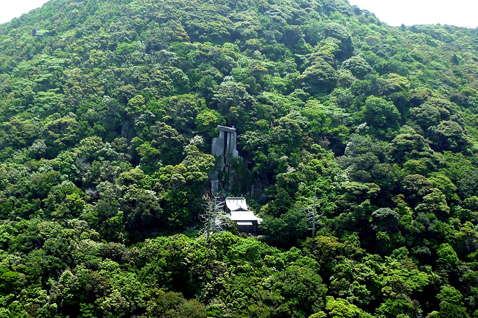
История острова это история молитв. Нодзаки был священным местом синто, и, по преданию, сюда переселились тайные христиане, скрывавшиеся от запрета на христианство. Они основали деревни Нокуби и Фунамори. Старая церковь Нокуби на холме стала символом людей, которые пережили долгие гонения и добились свободы веры. Семнадцать семей деревни Нокуби урезали себя во всём и вместе собрали деньги на строительство. Церковь достроили в 1908 году, и она служила людям, пока в 1971 году деревня не опустела.
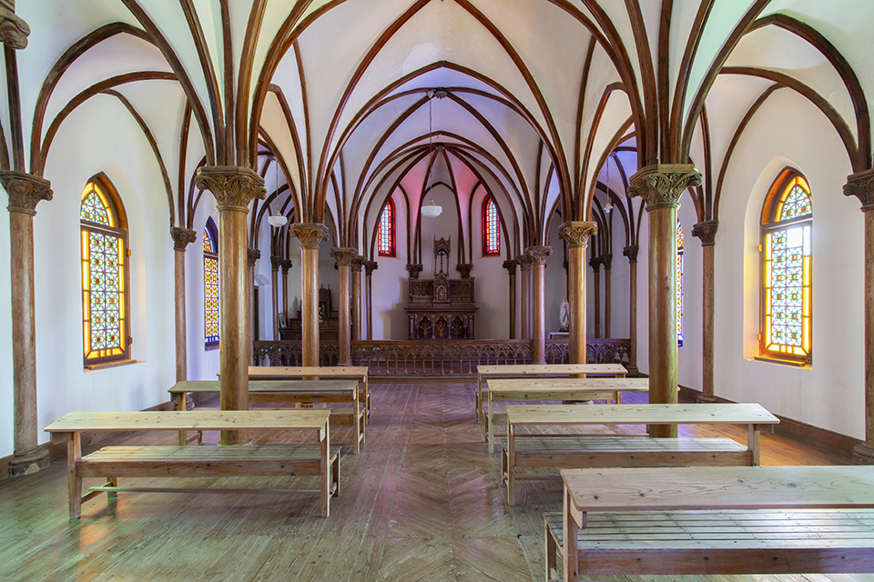
Позже церковь полностью отреставрировали. В 2018 году «Остатки деревень острова Нодзаки» вошли в список Всемирного наследия ЮНЕСКО как часть объекта «Места тайных христиан в Нагасаки и Амакусе». Старая церковь хранит память острова и по-прежнему смотрит на море.
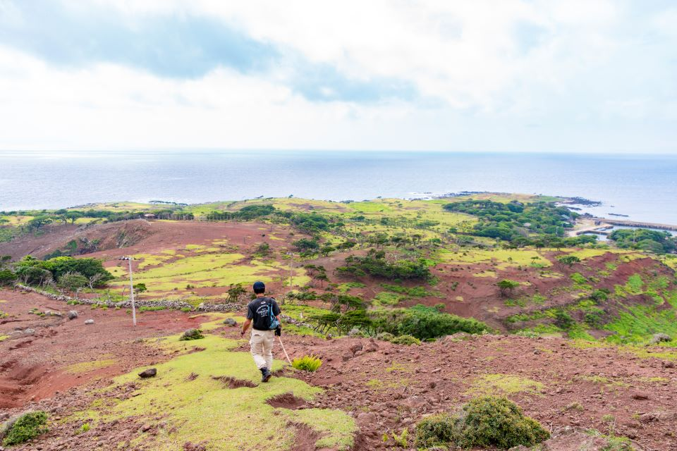
Остров Нодзаки, экскурсии с гидом
- Телефон
- +81 959-56-2646 (Ассоциация островного туризма Одзики)
- Как добраться
- из порта Сасэбо до Одзики, оттуда судном до Нодзаки
- Сайт
- ojikajima.jp
Справки о расписании судов из Сасэбо
- Телефон
- +81 956-22-6630 (туристический информационный центр Сасэбо)
Фото: Кадзуя Хаяси.